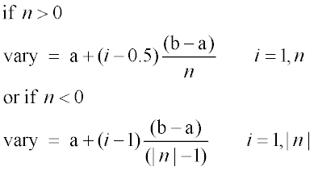
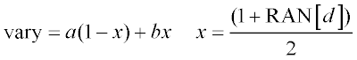
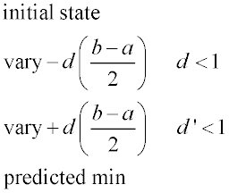

Iterates input records and a set of variables.
Syntax
$ITER vary a b n [ vary' a' b' n' ... ] [func [ func' ... ] [ 'title'] ] [NOMIN] [ m ] d d' ...
Remarks, 1st syntax
- The first syntax of $ITER
iterates the next input record (or brace delimited block) while changing
the internal register vary from a to b in n steps (up to 30000):

- Up to 60 vary variables
(levels of iteration) are permitted, so that the next input record is executed
n*n’*... times. If a single register func
is specified, the values stored in func at the first three levels
of iteration are written to a BRO binary distribution file. If more than one func
register is specified, the sum of the squares of these values is written to the file
instead. The name of the distribution file is either ITER.DIS or macro.DIS, with an
optional title. The file may be processed like any Distribution
file, typically with the DISPLAY command and related commands.
- One additional iteration is performed, by
default, after the specified n*n'*... iterations, with the
vary variables set to the values for which either the
discrete value of func was minimized, if only one func register was specified; or the discrete value of the sum of the
squares of the func registers was minimized, if more than one was
specified. If the minimum of the discretely tabulated value is not unique, the first
minimizing combination of vary variables is used, in the order of
iteration.
- The additional iteration can be suppressed
by specifying the NOMIN option. Consequently, NOMIN is a reserved name within the scope of an ITER
construct and cannot be used as a func register. If NOMIN is specified, each vary variable contains
its corresponding terminal value upon completion of the iterations. If NOMIN is not specified, the vary variables are set
to the values corresponding to the (possibly non-unique) minimum, as described in
the previous paragraph, upon completion of the additional iteration.
- The second sytax iterates the next input
record either m times while changing the vary
variables randomly, or in order to approach the actual minimum of the sum of the
squared func registers (up to 250). If m is
specified, the ds are the probability distribution types. That
is,

Otherwise if m is not specified, the ds are
fractional derivative increments relative to the ranges a b,
which are used to build a change matrix that will be solved by a SVD technique.
Double-sided derivatives are computed to approximate a damping factor from the
non-linearity predicted by the homogeneous second derivatives. Therefore, the
required number of iterations is 2*(variables+1); that is,

- The number of funcs
should be greater than (>) or equal to (=) the number of vary's to find a unique solution. In the case of nonlinear problems,
successive $ITER commands may be required to reach the precise
minimum.
- Use &ITER instead of
$ITER to automatically cancel output during loop processing
and restore it when completed.
- Multiple record iteration loops must be
enclosed in braces; that is, the next record after the ITER and
the first record of the block must start with an open brace { and the last
must end with a closed brace }.
$ITER vary a b n [ vary ' ...] [ func [ func' ... ] ]
{ ...
:
... }
$ITER Examples